English · Hrvatski
Monthwise – korisnički priručnik
Kratki vodič kroz aplikaciju za kućne financije. Sve snimke zaslona prikazuju izmišljene podatke.
1. Prvi koraci
Izbornikom s lijeve strane prelazite s jednog zaslona na drugi. Gumb pokraj logotipa sažima izbornik na ikone. Najprije se prijavite, a na novoj instalaciji postavite prvog administratora kućanstva (vidi Prijava i korisnici). Zatim aplikaciju jednom postavite ovim redom:
- Postavke → Kartice i računi: dodajte bankovne račune i platne kartice. Glavni račun označite kao Tekući račun i upišite mu početno stanje kako bi se stanja slagala s bankom. Za revolving karticu upišite i njezine uvjete i trenutačni dug (vidi Revolving kartice).
- Postavke → Ponavljajući računi: dodajte račune koji stižu svaki mjesec (struja, internet, pričuva…). Iznos, dan računa i dan dospijeća nisu obavezni: upišite ih za račun koji je uvijek isti, npr. članarinu za teretanu, a ostavite ih praznima kad se mijenjaju svaki mjesec.
- Krediti: jednom dodajte kredite i leasinge; njihove se mjesečne rate zatim pojavljuju same.
- Mjesec → Dodaj uplatu: dodajte plaću kao uplatu koja se ponavlja, pa se pojavljuje svaki mjesec.
Iznosi su u eurima. Sve što Monthwise može izračunati (rate, otplate kredita, plaćanja kartica, račune revolving kartica, doprinose) izračunava za vas, a vi to samo označite.
- Upisivanje iznosa:
1.234,56,1234,56i1234.56jednako vrijede.1.234se ne prihvaća jer može značiti tisuću ili jedan euro: upišite1234ili1,23. - Pločice na vrhu zaslona prikazuju samo ikonu i broj. Što broj znači vidite kad pokazivačem prijeđete preko ikone, kad do nje dođete tipkom Tab ili kad je na mobitelu dulje pritisnete.
- Datumi idu od siječnja 2000. do prosinca 2100.
- Više osoba, jedno kućanstvo. Svatko se prijavljuje svojim korisnikom (vidi Prijava i korisnici) i vidi iste podatke. Ako se isti podatak mijenja u dvije kartice preglednika ili na dva uređaja odjednom, vrijedi zadnje spremanje.
- Kad nešto pođe po zlu: ako se zaslon ne može prikazati, kratka poruka nudi ponovno učitavanje ili povratak na Pregled; izbornik i dalje radi. Crveni okvir Problem sustava na dnu izbornika (na mobitelu traka iznad donjeg izbornika) znači da aplikacija ne može doći do svojeg poslužitelja ili baze podataka.
- Zaslon Štednja još nije izrađen.
2. Prijava i korisnici
Svatko tko koristi Monthwise prijavljuje se svojim korisničkim imenom i lozinkom. Svi korisnici vide i mijenjaju iste podatke kućanstva; administrator kućanstva uz to upravlja korisnicima te izvozi i uvozi podatke.
Prvo pokretanje
Nova instalacija, kao i instalacija ažurirana s verzije bez prijave, prikazuje samo Postavljanje Monthwisea. Upišite kod za postavljanje, svoje ime za prikaz, korisničko ime i lozinku (najmanje 12 znakova, razmaci su dopušteni) i tako izradite prvog administratora kućanstva. Vaši podaci ostaju kakvi jesu.
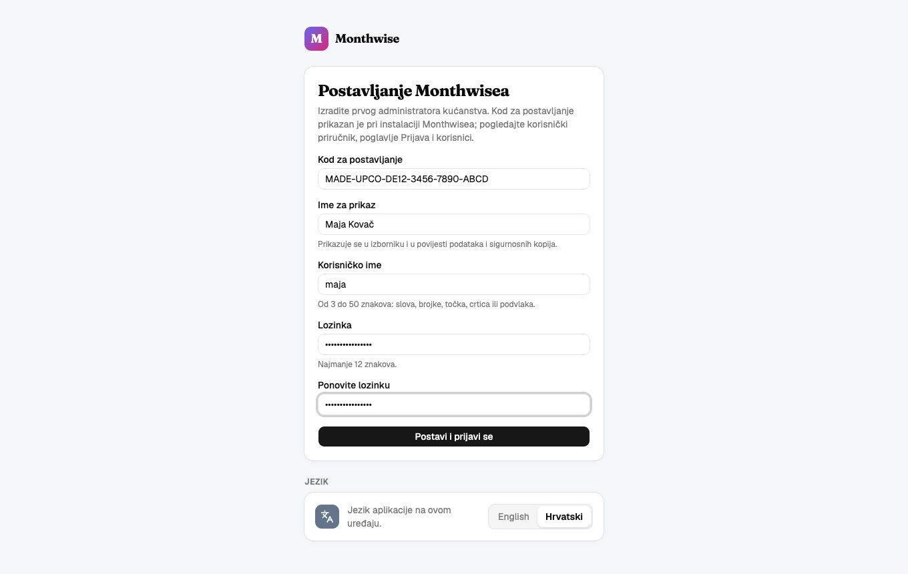
Kod za postavljanje može vidjeti samo osoba koja je instalirala Monthwise:
| Instalacija | Gdje je kod za postavljanje |
|---|---|
| Docker jednim klikom i usluga u pozadini | Ispisuje ga naredba za pokretanje ili instalaciju, npr. Setup code: 7KQM-2WXR-…. To je ujedno datoteka Setup__Code u mapi tajni (vidi Instalacija Monthwisea). |
| Azure | deploy.sh ispisuje naredbu koja ga čita iz Key Vaulta: az keyvault secret show --vault-name <vault> --name setup-code --query value -o tsv |
Velika i mala slova, razmaci i crtice u kodu nisu važni. Kod vrijedi jednom; pogrešan kod se odbija, a mnogo pokušaja se usporava.
Prijava i odjava
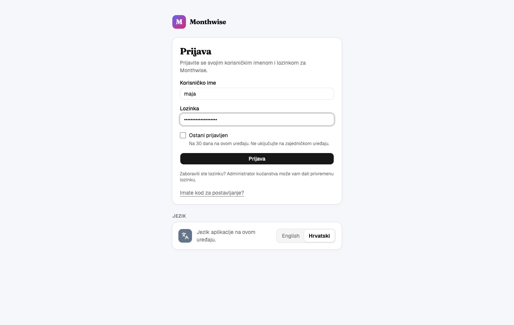
- Bez Ostani prijavljen odjavljujete se kad zatvorite preglednik ili nakon 12 sati. S tom opcijom ostajete prijavljeni 30 dana od zadnjeg korištenja. Na zajedničkom uređaju ostavite je isključenom.
- Svaki preglednik i uređaj ima svoju prijavu. Ponovno pokretanje ili ažuriranje Monthwisea nikoga ne odjavljuje.
- Vaše ime i gumb Odjava nalaze se na dnu izbornika.
- Nakon 5 pogrešnih lozinki zaredom to je korisničko ime zaključano 15 minuta, čak i s ispravnom lozinkom.
Korisnici
Postavke → Korisnici prikazuje tko se može prijaviti. Administrator kućanstva ondje dodaje, uređuje i briše korisnike; član vidi samo svog korisnika.
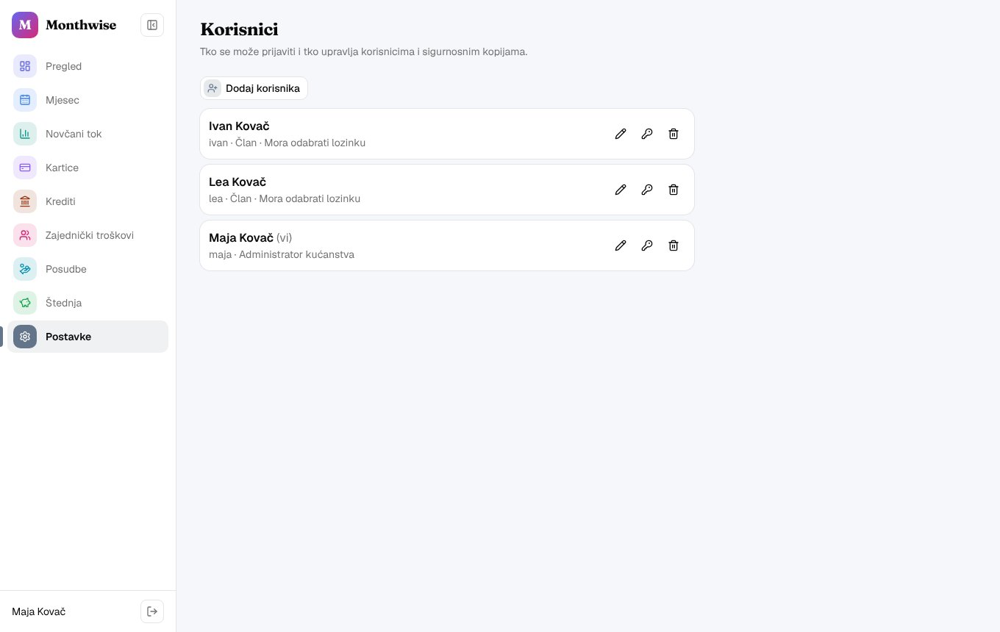
- Dodaj korisnika traži ime za prikaz, korisničko ime, ulogu i privremenu lozinku. Dajte je osobi sami; pri prvoj prijavi ona prije svega odabire svoju lozinku.
- Gumb s ključem postavlja novu privremenu lozinku za nekoga tko je zaboravio svoju. Time se ta osoba odjavljuje posvuda.
- Neaktivan korisnik se ne može prijaviti. Promjena uloge, aktivnosti ili brisanje vrijede odmah, i na uređajima na kojima je korisnik prijavljen.
- Uvijek postoji barem jedan aktivan administrator kućanstva: Monthwise odbija posljednjeg pretvoriti u člana, učiniti neaktivnim ili obrisati.
- Ime za prikaz vidi se u izborniku i kao „tko” u povijesti podataka i sigurnosnih kopija, koja ga zadržava i nakon brisanja korisnika.
Vaša lozinka. Postavke → Promijeni lozinku: upišite trenutnu lozinku i dvaput novu. Vaši drugi uređaji se odjavljuju.
Kad se nijedan administrator kućanstva ne može prijaviti
Ako je član zaboravio lozinku, administrator kućanstva postavlja privremenu. Ako se nijedan administrator kućanstva ne može prijaviti, osoba koja je instalirala Monthwise izrađuje novi kod za postavljanje:
| Instalacija | Naredba |
|---|---|
| Docker | ./monthwise.sh new-setup-code (Mac) ili .\monthwise.ps1 new-setup-code (Windows), u mapi paketa |
| Usluga u pozadini | monthwise.sh new-setup-code ili monthwise.ps1 new-setup-code u mapi native |
| Azure | ./deploy.sh --new-setup-code u mapi deploy/azure |
Naredba ponovno pokreće Monthwise i ispisuje novi kod (na Azureu naredbu koja ga čita). Na zaslonu za prijavu odaberite Imate kod za postavljanje?, upišite kod i korisničko ime administratora kućanstva s novom lozinkom: lozinka tog administratora se zamjenjuje, a ako je bio neaktivan, ponovno je aktivan. S novim korisničkim imenom dodaje se novi administrator kućanstva. Podaci kućanstva se ne mijenjaju. Korisničko ime člana ovdje se ne može upotrijebiti.
3. Pregled
Početni zaslon odgovara na pitanje „kako ide ovaj mjesec?”.
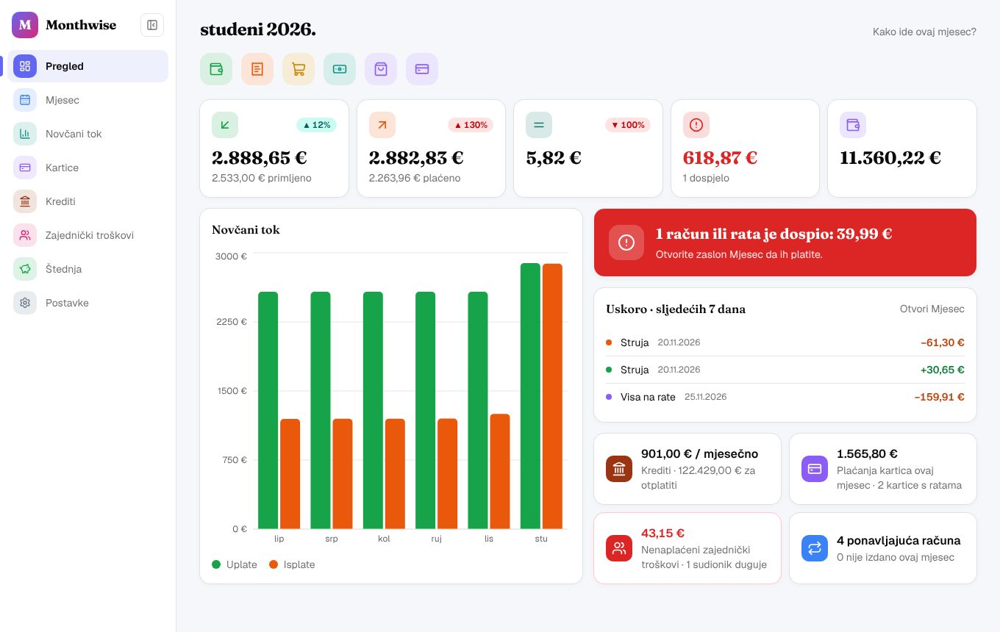
- Gumbi za brzo dodavanje ispod naslova: dodajte prihod, račun, trošak, podizanje gotovine ili kupnju karticom, ili platite revolving karticu.
- Pet pločica: uplate (i koliko je primljeno), isplate (i koliko je plaćeno), rezultat mjeseca, što je preostalo za platiti i Ukupno stanje: koliko će biti na tekućim računima na kraju mjeseca kad se sve primi i plati. S više tekućih računa to je njihov zbroj; otvorite ga da vidite svaki račun na zaslonu Kartice.
- Crvena traka: pojavljuje se samo kad nešto kasni. Otvorite zaslon Mjesec da to platite.
- Uskoro: plaćanja i uplate koji dospijevaju u sljedećih 7 dana.
- Novčani tok: grafikon uplata i isplata u zadnjih šest mjeseci; otvorite ga za zaslon Novčani tok. Male pločice ispod Uskoro vode na kredite, kartice, zajedničke troškove i ponavljajuće račune.
4. Mjesec
Radni zaslon: sve što u jednom mjesecu dolazi i odlazi. Strelicama pokraj naslova prelazite s mjeseca na mjesec.
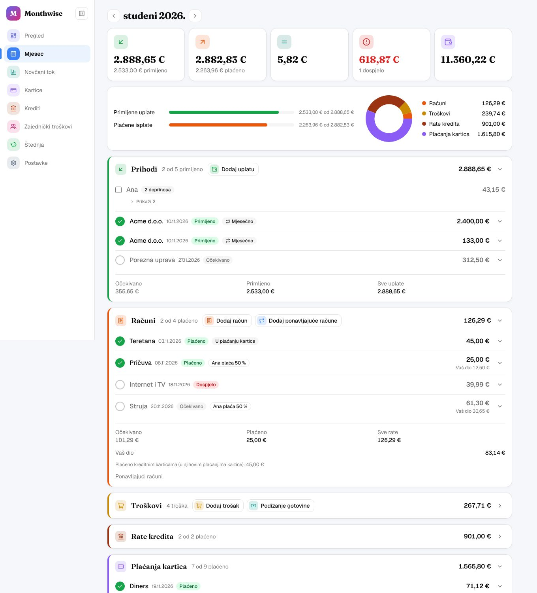
- Pločice na vrhu prikazuju istih pet brojeva za mjesec koji gledate. Za prošli mjesec Ukupno stanje je ono što je bilo na tekućim računima na njegovu kraju; za ovaj i buduće mjesece to je ono što će biti na njima kad se sve plati.
- Označite kružić ispred retka da ga označite kao Primljeno ili Plaćeno. Redci koji kasne označeni su crveno.
- Prihodi: Dodaj uplatu za plaću i ostale uplate. Doprinosi osoba s kojima dijelite troškove grupirani su pod njihovim imenom.
- Računi: Dodaj ponavljajuće račune izrađuje račune ovog mjeseca iz popisa ponavljajućih računa. Ponavljajući račun s iznosom, danom računa i danom dospijeća stiže kako se očekuje; ostali stižu kao Nije izdan s onim što se zna, a ostatak upišete kad račun stigne. Dodaj račun dodaje jednokratni račun; uključite Ponavlja se u njegovu obrascu da ga dodate i u ponavljajuće račune, pa se vraća sljedećih mjeseci.
- Troškovi: jednokratna potrošnja, npr. namirnice. Podizanje gotovine bilježi gotovinu podignutu s računa.
- Rate kredita, plaćanja kartica i računi revolving kartica popunjavaju se sami iz vaših kredita, kupnji karticama i revolving kartica.
- Strelica u retku otvara pojedinosti, gdje redak možete urediti ili obrisati.
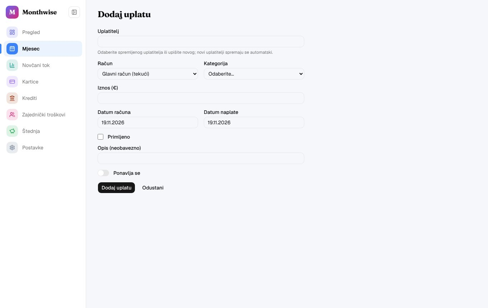
Račun ili trošak plaćen kreditnom ili charge karticom ne skida se odmah s računa: ulazi u sljedeće plaćanje te kartice. Plaćen revolving karticom, povećava dug te kartice.
5. Novčani tok
Prikazuje uplate i isplate kroz vrijeme: Ovaj mjesec (dan po dan), Zadnjih 12 mjeseci ili Ova godina. Filtri sužavaju prikaz po uplatitelju, računu ili kategoriji, a Prikaži kao tablicu prikazuje brojeve. Klik na mjesec na popisu otvara njegov mjesečni izvještaj, s početnim stanjima i ispravcima tog mjeseca.
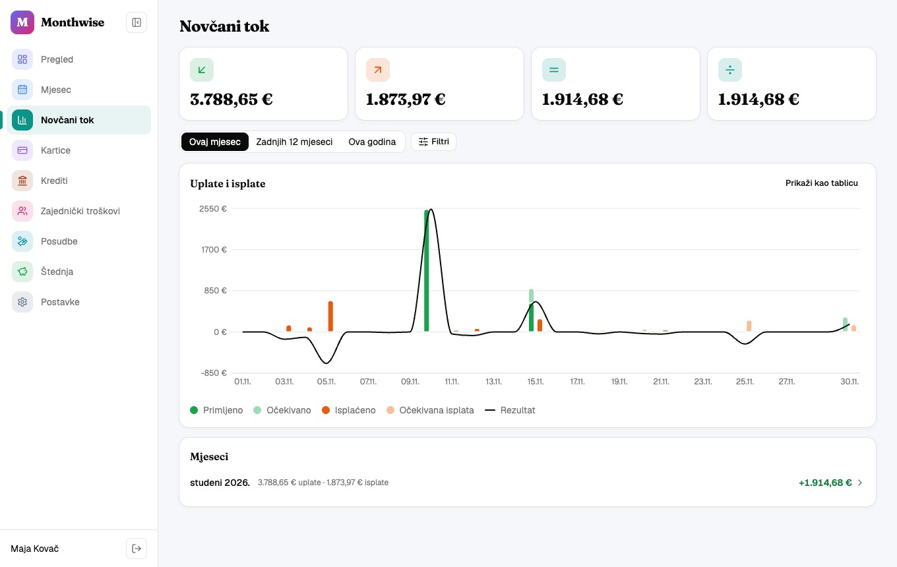
6. Kartice, rate i revolving kartice
Zaslon Kartice prikazuje stanje svakog računa sada i na kraju mjeseca, svaku karticu koja omogućuje rate te vaše revolving kartice.
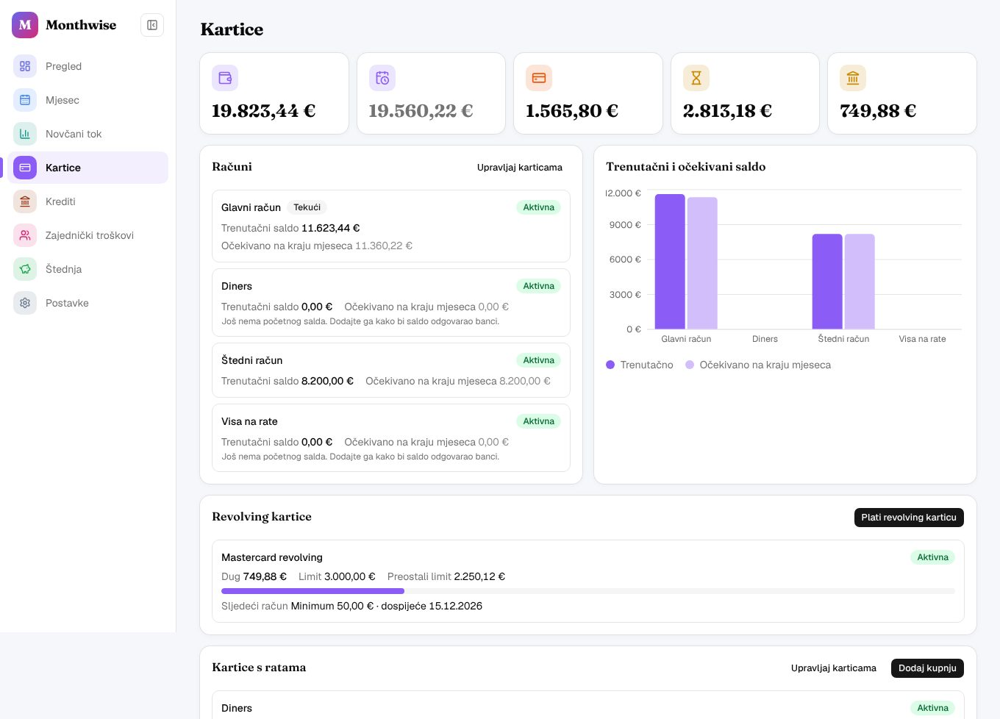
- Dodaj kupnju: odaberite karticu, iznos i datum. Uključite Na mjesečne rate i upišite broj rata; Monthwise raspoređuje iznos po plaćanjima kartice.
- Otvorite karticu da vidite njezina nadolazeća plaćanja po mjesecima i kupnje s onim što je još preostalo za naplatu.
- Plaćanje kartice označava se kao plaćeno na zaslonu Mjesec ili na samoj kartici.
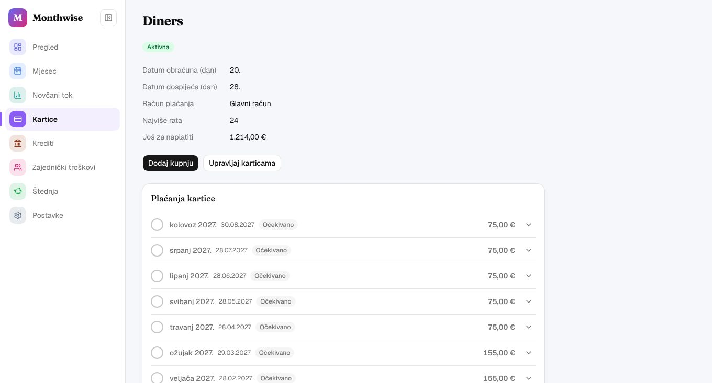
Revolving kartice
Revolving kartica ima dug umjesto plaćanja kartice. Dodajte je u Postavke → Kartice i računi s vrstom Revolving kartica, najvećim dopuštenim dugom i uvjetima: minimalna uplata (postotak i najmanji iznos), kamatna stopa, dan računa, dan dospijeća i račun plaćanja. Početni dug upišite iz zadnjeg izvoda banke.
- Računi, troškovi i kupnje plaćeni njome povećavaju dug; ne skidaju se s računa. Ne omogućuje rate.
- Svaki mjesec s dugom donosi račun za minimalnu uplatu, s dodanom kamatom. Pojavljuje se na zaslonu Mjesec i plaća se kao rata kredita: sam na dan dospijeća kad je kartica Povezana s računom plaćanja, inače kad ga označite. Možete platiti i više od minimuma.
- Plati revolving karticu (i na Pregledu) bilježi dodatnu uplatu u bilo kojem trenutku; Plati cijeli dug upisuje cijeli iznos. Ona smanjuje sljedeći račun.
- Otvorite karticu da vidite dug, preostali limit, račune, terećenja i uplate. Ispravi dug postavlja dug na iznos koji pokazuje banka; Ispravi na računu postavlja njegovu minimalnu uplatu i kamatu na iznose banke.
- Kartica s dugom ne može se arhivirati. Kad banka izda novu karticu, staru označite kao isteklu i navedite novu kao zamjensku, pa se dug prenosi na nju.
7. Krediti i leasing
Svi bankovni krediti i leasinzi s mjesečnom ratom, napretkom otplate i onim što je preostalo za otplatiti. Dodaj kredit traži zajmodavca, početni mjesec, dan plaćanja, mjesečni iznos i broj rata (a za leasing i ostatak vrijednosti).
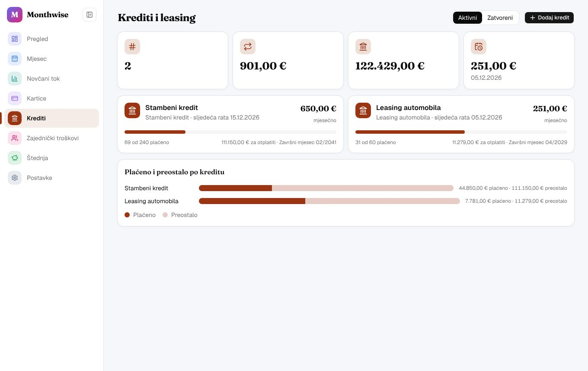
Otvorite kredit da vidite svaku ratu. Dodaj promjenu rate bilježi novi mjesečni iznos ili dan plaćanja od zadanog mjeseca (npr. nakon promjene kamate). Zatvori kredit završava kredit otplaćen prije roka.
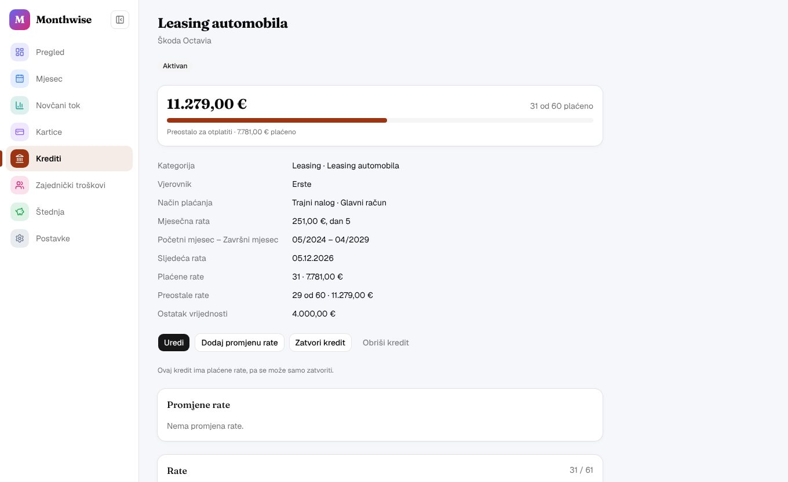
Rate koje se plaćaju trajnim nalogom same se označavaju kao plaćene na svoj datum. Rate koje se plaćaju po računu čekaju da ih označite.
8. Zajednički troškovi
Za troškove koje dijelite s nekim (partnerom ili cimerom). Dodajte osobu pomoću Dodaj sudionika, a zatim joj odredite udio na ponavljajućem računu ili kreditu. Monthwise svaki mjesec izračunava koliko vam ta osoba duguje i prikazuje to ovdje i kao očekivanu uplatu na zaslonu Mjesec. Doprinos označite kad primite novac.
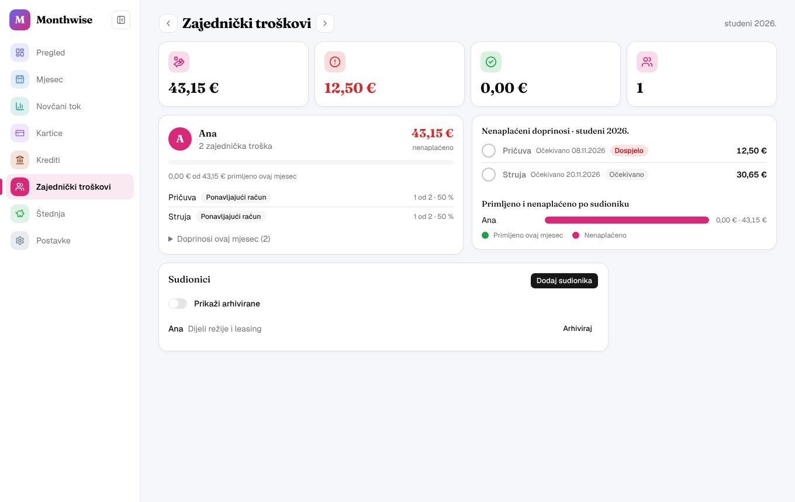
9. Posudbe
Za novac koji posudite nekome, npr. prijatelju ili rođaku, a koji će vam ga kasnije vratiti. Dodaj posudbu traži dužnika, iznos, datum posudbe, račun s kojeg novac odlazi i datum kada očekujete povrat, te neobavezan opis. Dužnik je s istog popisa kao i uplatitelji uplata: odaberite predloženo ime ili upišite novo, i ono se dodaje na popis (preimenujte ga ili uklonite u Postavke → Uplatitelji).
Posuđeni iznos je isplata s njegova računa na datum posudbe. Nije trošak, račun ni podizanje gotovine. Kad se novac vrati, na posudbi odaberite Zabilježi povrat: iznos je unaprijed ispunjen svime što je još nepodmireno, a račun onim s kojeg je novac otišao, pa povrat svega odjednom traži jedan klik. Posudba se može vratiti u više povrata, a svaki je uplata na račun na koji stigne. Dok se sve ne vrati, nepodmireni iznos je očekivana uplata na očekivani datum povrata. Kad dužnik zatraži više vremena, uredite posudbu i promijenite taj datum.
Zaslon Posudbe prikazuje koliko vam još duguju i koliko kasni, karticu za svaku posudbu i zbrojeve po dužniku. Posudba čiji je očekivani datum prošao označena je crveno kao Kasni ovdje, na zaslonu Mjesec i na Pregledu. Kad se sve vrati, posudba je Vraćeno i prelazi pod filtar Vraćene. Zaslon Mjesec ima svoj popis posudbi, a grafikon novčanog toka i mjesečno izvješće prikazuju posudbe u vlastitoj skupini; grafikon se može filtrirati po dužniku.
10. Postavke
Popisi koje aplikacija svugdje koristi: kartice i računi, uplatitelji, kategorije uplata, kategorije troškova, kategorije kredita i ponavljajući računi. Uz početne unose dodajte i svoje. Kategorija koja se već koristi ne može se obrisati; umjesto toga je sakrijte. Unaprijed zadane kategorije prikazuju se na odabranom jeziku dok ih ne preimenujete; naziv koji sami upišete uvijek se prikazuje onako kako ste ga upisali.
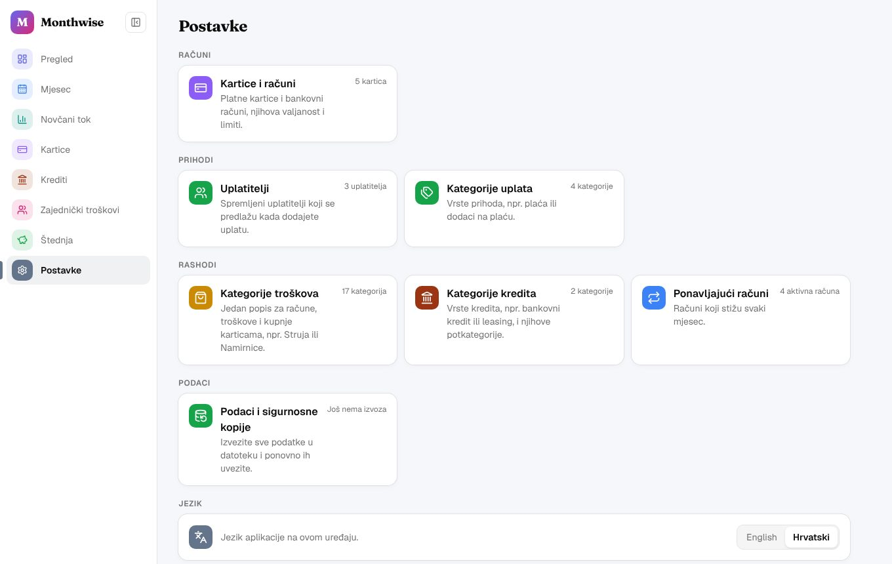
Brojevi kartica i IBAN-ovi spremaju se šifrirani i prikazuju se samo na zahtjev. Otvorite račun i odaberite Dodaj ispravak kad se njegovo stanje razlikuje od stanja u banci; ispravci mijenjaju stanje, ali se ne računaju kao uplata ni isplata.
Jezik. Pod Jezik birate English ili Hrvatski. Izbor se pamti na tom uređaju, a stranica se ponovno učita na odabranom jeziku. Dok jezik nije odabran, Monthwise slijedi jezik preglednika. Iznosi i datumi izgledaju jednako na oba jezika, a jezik ne mijenja nijedan spremljeni podatak.
Na dnu Postavki prikazani su verzija Monthwisea i vremenska zona koju koristi za „danas” (vidi Instalacija Monthwisea).
Pločica Korisnici i Promijeni lozinku opisani su u poglavlju Prijava i korisnici.
Pločica Podaci i sigurnosne kopije, u skupini Podaci, izvozi i uvozi sve vaše podatke; vidi Podaci i sigurnosne kopije.
11. Na mobitelu
Monthwise radi i u pregledniku na mobitelu. Izbornik se premješta u traku na dnu zaslona; sve ostalo radi jednako.
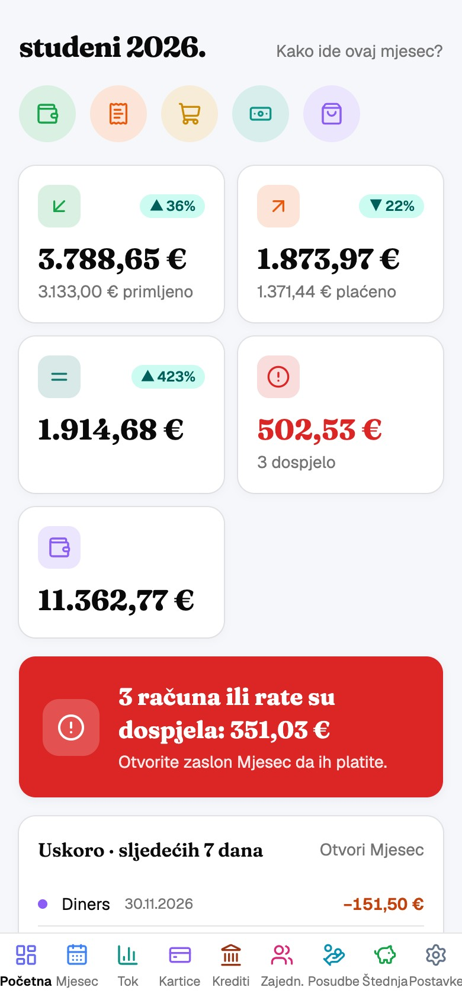
12. Instalacija Monthwisea
Monthwise radi na jedan od tri načina. Sva tri koriste istu verziju aplikacije, a podaci se mogu premjestiti s jednog na drugi.
| Način | Najbolje za | Trošak |
|---|---|---|
| Docker jednim klikom | Početak na Macu ili Windows računalu; isti paket poslije radi i na računalu koje je stalno uključeno | 0 € |
| Usluga u pozadini bez Dockera | Mac ili Windows računalo bez Dockera; pokreće se sama kad se prijavite | 0 € |
| Azure | Pristup Monthwiseu s bilo kojeg mjesta preko HTTPS-a | oko 15–20 € mjesečno nakon besplatne prve godine |
Da Monthwise premjestite s jednog načina na drugi, izvezite podatke na starom i uvezite ih na novom (vidi Podaci i sigurnosne kopije).
Svaki način treba GitHub CLI, jer je repozitorij Monthwisea privatan. Jednom se prijavite naredbom gh auth login, a zatim mu dopustite preuzimanje slike aplikacije naredbom gh auth refresh --scopes read:packages.
Vremenska zona. Monthwise određuje što je „danas” i koji je tekući mjesec u vremenskoj zoni kućanstva, Europe/Zagreb ako je ne promijenite, bez obzira na vremensku zonu u kojoj radi vaše računalo ili Azure. Za drugu zonu navedite IANA naziv vremenske zone, npr. Europe/Vienna: na Dockeru i usluzi u pozadini dodajte "Household": { "TimeZone": "Europe/Vienna" } u settings.json u mapi postavki i ponovno pokrenite Monthwise; na Azureu postavite varijablu okruženja Household__TimeZone aplikacije spremnika. Nepoznat naziv sprječava pokretanje Monthwisea, a zapisnik navodi koja je postavka pogrešna.
Docker jednim klikom
- Instalirajte Docker Desktop (Mac ili Windows) ili OrbStack (Mac, lakši). Oba su besplatna za osobnu upotrebu.
- Preuzmite paket:
gh release download --repo markosaric/monthwise --pattern "monthwise-docker-*.zip"i raspakirajte ga u mapu koju čuvate, npr. Documents/Monthwise. - Mac: dvaput kliknite
Monthwise.command. Prvi put macOS može tražiti dopuštenje: kliknite desnom tipkom, odaberite Open i potvrdite. Povucite ga u Dock da ostane ondje.
Windows: dvaput klikniteMonthwise.cmdi prikvačite ga na programsku traku ili izbornik Start. - Monthwise se pokreće, čeka da bude spreman i otvara
http://localhost:8080. U Safariju File → Add to Dock (u Edgeu ili Chromeu Install app) daje mu vlastitu ikonu i prozor.
Nakon prvog pokretanja Monthwise se sam vraća kad god se pokrene Docker. Ostale naredbe pokrećete u mapi paketa (./monthwise.sh na Macu, .\monthwise.ps1 u PowerShellu na Windowsima):
| Naredba | Što radi |
|---|---|
stop | Zaustavlja Monthwise. Podaci ostaju. |
update (ili update 1.2.0) | Preuzima najnoviju (ili zadanu) verziju i ponovno pokreće aplikaciju sa svim podacima. Najprije sprema kopiju za ažuriranje i vraća se na prethodnu verziju ako se nova ne pokrene. Monthwise zatim ostaje na toj verziji do sljedećeg ažuriranja; nova instalacija pokreće verziju paketa koji ste preuzeli. |
status / logs | Prikazuje radi li i koju verziju ima, ili zadnje retke zapisnika. |
network on / network off | Dopušta ili zaustavlja veze s drugih uređaja, npr. s mobitela preko Tailscalea. Zadano je isključeno. Svatko tko se poveže mora se prijaviti. |
new-setup-code | Izrađuje novi kod za postavljanje, ponovno pokreće Monthwise i ispisuje kod, za slučaj kad se nijedan administrator kućanstva ne može prijaviti (vidi Prijava i korisnici). |
remove (remove --data na Macu, remove -Data na Windowsima) | Uklanja Monthwise iz Dockera i zadržava podatke, osim ako zatražite i uklanjanje podataka i upišete DELETE. |
Gdje se što nalazi. Podaci su u Docker volumenu monthwise-pgdata. Tajne i postavke su u ~/Library/Application Support/Monthwise/docker na Macu i u %LOCALAPPDATA%\Monthwise\docker na Windowsima. Tu mapu može otvoriti samo vaš korisnički račun.
Usluga u pozadini bez Dockera
Monthwise i njegova vlastita baza PostgreSQL rade u pozadini bez Dockera i pokreću se kad se prijavite. Baza sluša na priključku 5442, pa se nikad ne sukobljava s razvojnom bazom.
- Mac: instalirajte Homebrew, zatim
gh release download --repo markosaric/monthwise --pattern monthwise-native-macos.shi pokrenitebash monthwise-native-macos.sh install. Skripta pomoću Homebrewa instalira PostgreSQL 17. - Windows:
gh release download --repo markosaric/monthwise --pattern monthwise-native-windows.ps1, a zatim u PowerShellu pokrenitepowershell -ExecutionPolicy Bypass -File .\monthwise-native-windows.ps1 install. PostgreSQL dolazi s izdanjem; administratorska prava nisu potrebna. - Otvorite
http://localhost:8080i dodajte ga u Dock ili na programsku traku kao gore.
Instalacijski program kopira svoju skriptu u mapu Monthwisea: ~/Library/Application Support/Monthwise/native/monthwise.sh na Macu, %LOCALAPPDATA%\Monthwise\native\monthwise.ps1 na Windowsima. Prima start, stop, update, status, logs, network on|off i new-setup-code kao i Docker naredbe, te uninstall. Kao i Docker naredba, update najprije sprema kopiju za ažuriranje, a ako se nova verzija ne pokrene, sam vraća podatke i prethodnu verziju. uninstall zadržava podatke, tajne i zapisnike osim ako dodate --data (Mac) ili -Data (Windows) i upišete DELETE.
Gdje se što nalazi, u istoj mapi native: pgdata (baza podataka), config/secrets (tajne), config/settings.json (postavke) i logs (jedna datoteka zapisnika po danu, čuva se zadnjih 14 dana).
Kopije za ažuriranje
Prije svakog ažuriranja na Dockeru ili usluzi u pozadini, update sprema potpunu kopiju baze podataka, kopiju za ažuriranje. Ako se ta kopija ne može izraditi, ništa se ne ažurira. Naziv datoteke sadrži datum, vrijeme i verziju iz koje je izrađena, npr. monthwise-20261112-101530-1.2.0.dump. Čuvaju se zadnje tri, a može ih otvoriti samo vaš korisnički račun:
| Instalacija | Mapa |
|---|---|
| Docker na Macu | ~/Library/Application Support/Monthwise/docker-update-backups |
| Docker na Windowsima | %LOCALAPPDATA%\Monthwise\docker-update-backups |
| Usluga u pozadini | update-backups u mapi native |
Ostaju kad uklonite ili deinstalirate Monthwise, a nestaju samo s njegovim podacima (--data / -Data).
Ako nova verzija ne može ažurirati bazu podataka ili se ne pokrene, update vraća podatke iz kopije za ažuriranje i pokreće verziju koja je radila prije. Podaci su tada točno onakvi kakvi su bili prije ažuriranja; poruka navodi kopiju za ažuriranje i zapisnik. Monthwise sam nikad ne poništava napola izvršeno ažuriranje korak po korak, jer bi to moglo ukloniti podatke.
Ručno vraćanje kopije za ažuriranje
Potrebno je samo kad update javi da ni vraćanje podataka nije uspjelo. Monthwise je tada zaustavljen, a baza je ostala onakva kakvu ju je ostavilo neuspjelo ažuriranje. Vratite kopiju za ažuriranje koju navodi poruka, a zatim ažurirajte na verziju iz naziva datoteke (onu koja je radila prije):
Docker, u mapi paketa (./monthwise.sh na Macu, .\monthwise.ps1 na Windowsima):
docker stop monthwise-app-1
docker cp "<kopija za ažuriranje>" monthwise-db-1:/tmp/restore.dump
docker exec monthwise-db-1 dropdb -U monthwise --force monthwise
docker exec monthwise-db-1 createdb -U monthwise monthwise
docker exec monthwise-db-1 pg_restore -U monthwise -d monthwise --no-owner /tmp/restore.dump
./monthwise.sh update <verzija iz naziva datoteke>Usluga u pozadini na Macu, u Terminalu:
cd ~/Library/Application\ Support/Monthwise/native
export PGPASSWORD="$(cat config/secrets/postgres_password)" PG="$(brew --prefix postgresql@17)/bin"
"$PG/dropdb" -h 127.0.0.1 -p 5442 -U monthwise --force monthwise
"$PG/createdb" -h 127.0.0.1 -p 5442 -U monthwise monthwise
"$PG/pg_restore" -h 127.0.0.1 -p 5442 -U monthwise -d monthwise --no-owner "<kopija za ažuriranje>"
unset PGPASSWORD
./monthwise.sh update <verzija iz naziva datoteke>Usluga u pozadini na Windowsima, u PowerShellu:
cd $env:LOCALAPPDATA\Monthwise\native
$env:PGPASSWORD = Get-Content config\secrets\postgres_password -Raw
.\pgsql\bin\dropdb.exe -h 127.0.0.1 -p 5442 -U monthwise --force monthwise
.\pgsql\bin\createdb.exe -h 127.0.0.1 -p 5442 -U monthwise monthwise
.\pgsql\bin\pg_restore.exe -h 127.0.0.1 -p 5442 -U monthwise -d monthwise --no-owner "<kopija za ažuriranje>"
Remove-Item Env:PGPASSWORD
.\monthwise.ps1 update <verzija iz naziva datoteke>Ako naziv datoteke sadrži unknown, upotrijebite verziju koju ste imali prije neuspjelog ažuriranja. update na kraju sprema novu kopiju za ažuriranje vraćenih podataka i pokreće tu verziju.
Azure
Jedna skripta postavlja sve u EU regiji (zadano West Europe), u grupi resursa rg-monthwise:
| Resurs | Čemu služi | Očekivani trošak mjesečno |
|---|---|---|
| Container App (smanjuje se na nulu) | Pokreće Monthwise. Kad se ne koristi, zaustavlja se, pa prva stranica nakon mirnog razdoblja treba nekoliko sekundi. | 0 € unutar mjesečne besplatne kvote |
| PostgreSQL Flexible Server, Burstable B1ms | Baza podataka, sa 7 dana automatskih sigurnosnih kopija | 0 € prvih 12 mjeseci na novom računu, zatim oko 13–15 € plus pohrana |
| Virtualna mreža i privatna DNS zona | Privatna mreža Monthwisea: baza nema javnu adresu i dostupna je samo iz nje | oko 0,50 € |
| Container Apps posao caj-monthwise-db-setup | Radi nekoliko sekundi pri svakoj objavi i postavlja vlastitu prijavu Monthwisea u bazu | 0 € unutar mjesečne besplatne kvote |
| Key Vault | Lozinke baze podataka, ključevi za šifriranje i kod za postavljanje | nekoliko centi |
| Log Analytics | Zapisnik, čuva se 30 dana | 0 € pri kućnoj upotrebi |
| Upozorenje o proračunu | Šalje e-poruku na 80 % proračuna (zadano 25) i kad se predviđa da će mjesec prijeći proračun | 0 € |
Azure s plaćanjem po potrošnji nema čvrstu gornju granicu troška; upozorenje o proračunu izrađuje se pri prvoj objavi, pa ste upozoreni na vrijeme.
- Izradite GitHub token samo s ovlašću read:packages (GitHub → Settings → Developer settings → Personal access tokens), kako bi Azure mogao preuzeti sliku aplikacije.
- U Azure Cloud Shellu (Bash), ili bilo gdje s prijavljenim Azure CLI-jem, preuzmite mapu deploy/azure iz repozitorija i pokrenite:
GHCR_USERNAME=<vaš GitHub korisnik> GHCR_TOKEN=<token> BUDGET_EMAIL=<vaša e-adresa> ./deploy.sh 1.2.0 - Skripta ispisuje adresu Monthwisea i, prvi put, kako kopirati ključeve za šifriranje iz Key Vaulta u upravitelj lozinki te kako pročitati kod za postavljanje za prvog korisnika.
Za ažuriranje pokrenite istu naredbu s novom verzijom. Podaci i tajne ostaju. Zapisnik vidite naredbom az containerapp logs show -g rg-monthwise -n ca-monthwise.
Baza podataka je privatna: prima veze samo iz vlastite mreže Monthwisea u Azureu, ne s interneta, od drugih korisnika Azurea ni iz alata za baze podataka na vašem računalu. Monthwise se prijavljuje vlastitom prijavom, monthwise_app, koja može koristiti samo podatke Monthwisea. Lozinka administratora poslužitelja (postgres-password u Key Vaultu) nikad se ne daje Monthwiseu; treba vam samo za održavanje iznutra mreže.
Instalacija postavljena prije nego što je baza postala privatna ne može se premjestiti na mjestu. deploy.sh tada ništa ne mijenja i ispisuje korake: izvezite podatke u Postavkama, objavite u novu grupu resursa (MONTHWISE_RESOURCE_GROUP=rg-monthwise-2 ispred iste naredbe), ondje uvezite datoteku, provjerite je i obrišite staru grupu resursa.
Na Azureu vlastite automatske sigurnosne kopije baze zamjenjuju kopije za ažuriranje. Ako nova verzija ne može ažurirati bazu podataka, prestaje raditi na bazi, a deploy.sh ispisuje vrijeme neposredno prije objave i naredbu za vraćanje baze na to vrijeme (vidi Vlastite sigurnosne kopije Azurea).
13. Podaci i sigurnosne kopije
Postavke → Podaci i sigurnosne kopije sprema sve vaše podatke u jednu datoteku na vašem uređaju i vraća ih iz takve datoteke. Na vrhu odjeljka piše kad ste zadnji put izvezli i uvezli podatke.
Izvoz
- Odaberite Izvezi podatke i dvaput upišite lozinku datoteke (najmanje 12 znakova).
- Datoteka se preuzima, a naziv joj je npr.
monthwise-export-2026-10-31-0815.monthwise.
Uvoz
- Odaberite Uvezi podatke, izaberite datoteku izvoza, upišite njezinu lozinku, a zatim Provjeri datoteku. Još se ništa ne mijenja. Datoteka izvoza može imati najviše 10 MB; veća datoteka se odbija.
- Monthwise prikazuje kad je datoteka izrađena i koliko kartica, kredita, uplata, kupnji karticama, računa i troškova sadrži, uz ono što je sada u Monthwiseu.
- Upišite
ZAMIJENIi odaberite Zamijeni sve podatke. Uvoz uvijek zamjenjuje sve podatke; nikad ne dodaje datoteku onome što već postoji.
Neposredno prije uvoza Monthwise čuva sigurnosnu kopiju trenutačnih podataka. Ako je uvoz bio pogreška, odaberite Vrati pod Sigurnosna kopija. Ako uvoz ne uspije, ništa se ne mijenja. Datoteke iz starijih verzija Monthwisea mogu se uvesti; za datoteku iz novije verzije najprije treba ažurirati Monthwise. Dok uvoz traje, ostali zasloni kratko čekaju.
Samo administrator kućanstva može izvoziti i uvoziti; članovi vide povijest. Korisnici i lozinke nikad nisu u datoteci izvoza, a uvoz ih ne mijenja.
Datoteka izvezena na jednom jeziku jednaka je onoj izvezenoj na drugom i uvozi se na oba jezika.
Podsjetnik i povijest
Pregled vas podsjeća na izvoz kad ga niste napravili 30 dana. Pod Podsjetnik na izvoz možete ga isključiti ili odabrati 7, 14, 30, 60 ili 90 dana. Zatvori ga skriva dok ne prođe sljedeće razdoblje bez izvoza.
Povijest navodi svaki izvoz, uvoz i sigurnosnu kopiju s vremenom, datotekom i ishodom, uključujući neuspjele pokušaje. Uvoz ne mijenja povijest.
Premještanje Monthwisea
Za prelazak na drugo računalo ili s Dockera na uslugu u pozadini ili Azure: izvezite podatke na staroj instalaciji, instalirajte novu i ondje uvezite datoteku. Datoteka radi iako nova instalacija ima vlastite ključeve za šifriranje.
Vlastite sigurnosne kopije Azurea
Na Azureu baza podataka čuva i 7 dana automatskih sigurnosnih kopija. U Azure portalu otvorite PostgreSQL poslužitelj u rg-monthwise i odaberite Restore da izradite kopiju baze kakva je bila u ranijem trenutku, u istoj virtualnoj mreži i privatnoj DNS zoni, a zatim na nju usmjerite Monthwise. Upotrebljavajte to kao drugu sigurnosnu mrežu; vaše datoteke izvoza ostaju glavna sigurnosna kopija.